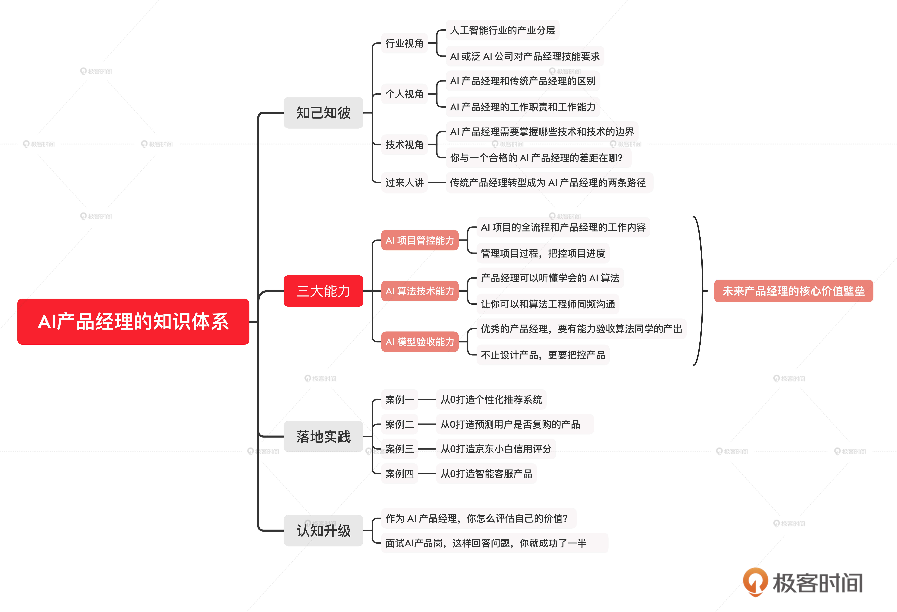

- 00 开篇词 你好，产品经理！你的未来价值壁垒在哪儿？.md.html
- 01 行业视角：产品经理眼中的人工智能.md.html
- 02 个人视角：成为AI产品经理，要先搞定这两个问题.md.html
- 03 技术视角：AI产品经理需要懂的技术全景图.md.html
- 04 过来人讲：成为AI产品经理的两条路径.md.html
- 05 通过一个 AI 产品的落地，掌握产品经理工作全流程.md.html
- 06 AI 模型的构建过程是怎样的？（上）.md.html
- 07 AI模型的构建过程是怎样的（下）.md.html
- 08 算法全景图：AI产品经理必须要懂的算法有哪些？.md.html
- 09 K近邻算法：机器学习入门必学算法.md.html
- 10 线性回归：教你预测，投放多少广告带来的收益最大.md.html
- 11 逻辑回归：如何预测用户是否会购买商品？.md.html
- 12 朴素贝叶斯：让AI告诉你，航班延误险该不该买？.md.html
- 13 决策树与随机森林：如何预测用户会不会违约？.md.html
- 14 支持向量机：怎么预测股票市场的涨与跌？.md.html
- 15 K-means 聚类算法：如何挖掘高价值用户？.md.html
- 16 深度学习：当今最火的机器学习技术，你一定要知道.md.html
- 17 模型评估：从一个失控的项目看优秀的产品经理如何评估AI模型？.md.html
- 18 核心技能：产品经理评估模型需要关注哪些指标？.md.html
- 19 模型性能评估（一）：从信用评分产品看什么是混淆矩阵？.md.html
- 20 模型性能评估（二）：从信用评分产品看什么是KS、AUC？.md.html
- 21 模型性能评估（三）：从股价预测产品看回归算法常用的评估指标.md.html
- 22 模型稳定性评估：如何用PSI来评估信用评分产品的稳定性？.md.html
- 23 模型监控：产品经理如何建设算法模型监控指标体系？.md.html
- 24 推荐类产品（一）：推荐系统产品经理的工作职责与必备技能.md.html
- 25 推荐类产品（二）：从0打造电商个性化推荐系统产品.md.html
- 26 预测类产品（一）：用户复购意向预测的底层逻辑是什么？.md.html
- 27 预测类产品（二）：从0打造一款预测用户复购意向的产品.md.html
- 28 预测类产品（三）：从0打造一款“大白信用评分产品”.md.html
- 29 自然语言处理产品：从0打造一款智能客服产品.md.html
- 30 AI产品经理，你该如何提升自己的价值？.md.html
- 31 AI产品经理面试，这些问题你必须会答！.md.html
- 春节加餐1 用户增长模型：怎么利用AI技术判断新渠道性价比？.md.html
- 春节加餐2 一次答疑，带你回顾模型评估的所有基础概念.md.html
- 期中周测试题 ，你做对了吗？.md.html
- 期中答疑 AI产品经理热门问题答疑合集.md.html
- 结束语 唯一不变的，就是变化本身！.md.html
- 捐赠
00 开篇词 你好，产品经理！你的未来价值壁垒在哪儿？
你好，我是海丰。
很高兴能和你在这个专栏中见面，跟你一起聊聊产品经理这个岗位，尤其是人工智能领域的产品经理，也叫 AI 产品经理。
我先来介绍一下我自己吧。我现在是京东集团的高级架构师，负责京东生活服务事业群的数据模型与算法，主导过推荐系统、用户意图识别、高潜用户预测、商品内容生成等多款 AI 产品的设计落地。
在来到京东之前，我曾经作为 AI 产研负责人带领整个产品和研发团队，为用户提供基于大数据和 AI 技术的产品解决方案。这段经历也让我既懂研发技术架构，又具备了产品思维和商业视角。
但其实，我刚开始的工作也和 AI 产品没有关系，是在机缘巧合之下才转型的。当时，我们公司突然要上线一个 AI 项目，因为一时没有合适的 AI 产品经理接手，我才被动地成为这个 AI 项目的负责人，去组建和培养整个 AI 产品团队，同时还要带领算法团队。
项目完成之后，我就继续在这个领域深耕，又成了京东的高级架构师。在这个过程中，我也帮助过团队中的很多产品经理成功转型 AI 产品经理。可以说，不管是我自己转型，还是帮助别人转型，我都踩过很多的“坑”，也总结了很多的经验。
未来产品经理的价值壁垒
其实，我们身边的很多人都会因为类似的情况而调换岗位，最终在这个岗位走得更远。那随着越来越多的公司认识到 AI 的重要性，去建立算法团队之后，传统产品经理转型 AI 产品经理的情况会越来越普遍。
甚至我认为，未来一两年后，人人都可能是 AI 产品经理。
听我这么一说，你在心里可能先白了我一眼，又是“人人”，而且还是“AI”，怎么可能呢？我这么说还真不是为了耸人听闻，故意抓眼球，听我跟你仔细说道说道。
不知道你有没有听说过 “移动互联网产品经理” 这个岗位？其实现在已经没有这种岗位了，因为移动互联网已经成为整个互联网的基础建设，而移动互联网技术也已经深入到了各行各业，所有产品经理都是移动互联网产品经理。你看，这就是移动互联网技术的发展所带来的必然结果。
现在呢，你是不是感觉 AI 好像也没有前几年那么热了，这其实是因为 AI 技术的落地越来越多了，大家已经过了谈论的阶段，而是实实在在地在使用它。所以我大胆预测，在不远的一两年后，AI 技术必将和移动互联网技术一样，成为互联网的基础建设。到那时候，我们的工作或多或少都要基于 AI 技术，AI 技术也会赋能于各行各业，也就没有所谓的 AI 产品经理这个岗位了，因为每一个产品经理都是 AI 产品经理。
其实，我的预测还不真是空穴来风。如果你平时留心过 AI 领域的新闻肯定会发现，最近几年，不仅是以 AI 技术为主的创业公司越来越多，一些知名的互联网公司，甚至传统行业公司也都在设立自己的 AILab 或者 AI 事业部，并且联合各大院校设立 AI 实验室。而两年前，只有专门从事 AI 领域的企业或者 BATJ 这样的大厂才会设立这样的部门或岗位。
因此，随着 AI 技术逐渐落地和市场认可度的不断提高，AI 产业岗位以及泛 AI 产业岗位在当今社会已经变得越来越走俏。我身边的一些产品经理也因此越来越关注 AI 领域，会越来越多地和我讨论一些 AI 相关的问题。我把它们都总结下来，大概有这么两类。
一些传统行业的产品经理会问我，我适不适合转行去做 AI 产品经理啊？如果我要转行的话，需要做什么准备？还有AI 产品经理要懂各种算法吗？这些算法太难了，我看不懂怎么办呀？
还有一些刚刚成为AI产品经理的朋友会问我，现在工作上好多事儿我都搞不清楚。比如，我给算法团队提需求的时候总要沟通好多次，效果还不好，算法同学肯定也没少埋怨我。再比如，算法同学交付过来的模型，我发现效果不好，但他们说的原因我又听不懂，这项目推进起来感觉越来越难……
对一些已经成为AI产品经理的同学，如果你也有类似的疑问，我建议你系统地学一些AI产品经理相关的课程。毕竟夯实基础，我们才能走得更远嘛。
那对一些还不是产品经理的同学，如果你也对AI产品经理好奇，想要转型的话。我真的建议你尽早抓住 AI 这个破局点，趁着行业还没那么成熟，对 AI 产品经理的要求还不是那么高的时候，尽早进入这个行业。到时候随着 AI 发展，你作为这个行业中的先行者，自然更容易占得先机。
总的来说，尽早为自己储备 AI 产品经理的知识，能帮助我们建立自身价值壁垒，也是我们抓住 AI 行业红利一次不错的机会。
如何成为一名 AI 产品经理？
那么我们该如何成为一名 AI 产品经理，或者更进一步，我们该如何成为一名优秀的产品经理呢？在这个专栏中，我把 AI 产品经理的知识体系梳理成 4 大板块，分别是知己知彼、三大能力、落地实践和认知升级。接下来，我就详细给你讲讲，每个板块我都是怎么设计的。

板块一：知己知彼
想要转型 AI 产品经理，我们只有先搞清楚自己能不能转型，都有哪些方向和领域可以转型，才能确定自己要转去哪个方向，进而去做充足的准备。永远要记住一点：选择对的跑道，比跑得快更为重要。当然，这对初级AI产品经理同样适用。
在这个板块中，我会分别从行业、个人、技术，以及过来人这四个视角，帮你全方位了解 AI 产品经理这个岗位，希望能让你少走弯路。
板块二： AI 产品经理的三大能力
清楚了自己转型的方向和应该具备的能力后，就到了夯实基础的时候。掌握基础最快的办法就是把自己带入到对应的角色里，去处理真实的问题。
在一个 AI 产品落地的过程中，产品经理要负责产品开发周期和进度的管控，保证产品按时上线。因为 AI 产品经理和互联网产品经理在本质上的不同，就是会牵扯到算法团队，AI 产品经理需要和算法工程师进行多次专业的需求沟通，所以 AI 产品经理要听得懂他们说的技术词汇、算法实现，对整个算法有自己的判断，知道每个算法能解决什么问题，解决到什么程度，以及有能力对最后训练出的模型好坏进行评估。这样才能推动产品向前发展。
因此，在第二个板块中，我把 AI 产品经理需要掌握的核心能力总结成了三个，分别是 AI 项目管控能力、算法技术能力和模型验收能力。
首先，为了帮助你快速进入 AI 产品经理这个角色，我会结合 AI 产品的建设流程，告诉你怎么主导一个AI 项目，怎么构建一个 AI 算法模型，以及这个过程中怎么和算法人员进行沟通。
其次，我通过算法在真实案例中应用的方式，告诉你AI 领域主流算法的逻辑和它们的应用场景。我会站在一个产品经理的角度，给你解释这些复杂的概念，让你掌握它们的优缺点和适用场景，保证你一定听得懂。
最后，我还会带你学习如何检验一个 AI 模型的好坏，如何验收算法工程师的产出，为你梳理一套模型验收的知识体系和监控指标。
这三大能力不仅和互联网经理要求的能力有很大区别，也是 AI 产品经理的核心技能壁垒。因此，这是我们转型 AI 产品经理必备的基础，更是我们从这个岗位脱颖而出的核心竞争力。
板块三：落地实践
掌握了成为 AI 产品经理的理论知识还不够，在实际工作中，我们还是会很难想到用哪些知识点去解决实际问题，或者提出的产品方案太理想化。
所以，在第三个板块中，我会通过几个最常见的案例，比如个性化推荐系统产品、用户复购意向预测产品、信用评分产品，以及智能客服类产品，带你把学过的知识落地，让你知道它们是怎么在一个业务场景发挥作用的。希望这个板块结束之后，你能既懂理论又懂实践。
板块四：认知升级
最后我还希望，通过这个专栏你不只是收获了 AI 行业知识、技术知识，以及成为一个AI产品经理的方法，还能收获一份自我提升的指南。
因为在我看来，入门容易，但入门之后的自我提升可不容易。而想要提升自身能力，就要先提升自己的认知能力，只有认知到了，才有提升的可能性。
所以，在最后这个板块里，我会为你讲讲 AI 产品经理的认知升级。这里有我在研发、产品和管理上的多年经验，希望这些经验你能够好好利用起来，借助它们提升自己的认知，让自己的职业道路越走越宽。
学习这个专栏的建议
不过，在正式开始学习这个专栏之前，考虑到很多同学对 AI 领域的理解层次不一样，所以我还为你总结了一套有效学习这门课的方法论。
第一阶段，形成对知识理解的线性思维，对 AI 产品经理课程体系有整体的认知。不管你是刚刚学习AI 还是已经对 AI 有一定的了解，我都建议你先完整地跟着整个专栏的节奏学习一遍，对 AI 产品经理这个体系有一个系统性的认识。这不仅能帮助你查缺补漏，也能让你在工作中遇到相关问题的时候，快速找到解决办法。
第二阶段，形成对知识理解的结构化思维，在头脑中描绘出自己在 AI 领域的知识体系。在你充分地学习和实践了第一阶段后，你需要从专栏中的每一个单一的知识点中“跳出来”，高屋建瓴地看问题，并逐步建立自己的 AI 知识体系，从知识点的学习到知识网络的补齐。
第三阶段，形成对知识理解的批判性思维，打破固有知识体系，建立 AI 思维的底层逻辑。这个阶段，我希望你可以锻炼自己的批判性思维，既能合理地输入别人的意见，也能输出自己的独立认知，最后形成自己的AI底层思维，这样你就能驾驭 AI，真正让它变成你的工具。
最后，我还想说，这个专栏包含了我转型和操盘 AI 产品的全部心得，这是书上和网上都搜索不到的。那我在极客时间把它们分享出来，就是不希望那些我踩过的“坑”、犯过的错，你再走一遍。所以，我希望在专栏更新的过程中，能够经常看到你的留言，不管是提问还是交作业，我都会认真回复。
AI 时代属于产品经理的机会已经来了，如果你想用最低的成本转型到 AI 赛道，提高自己的价值壁垒，拓宽未来的发展道路，就快和我一起学习吧！
© 2019 - 2023 Liangliang Lee. Powered by gin and hexo-theme-book.